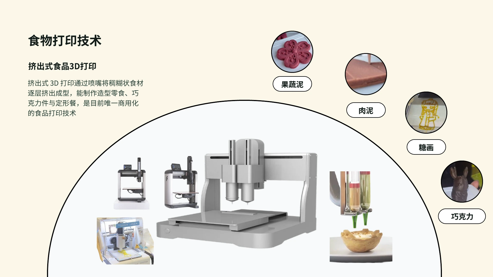
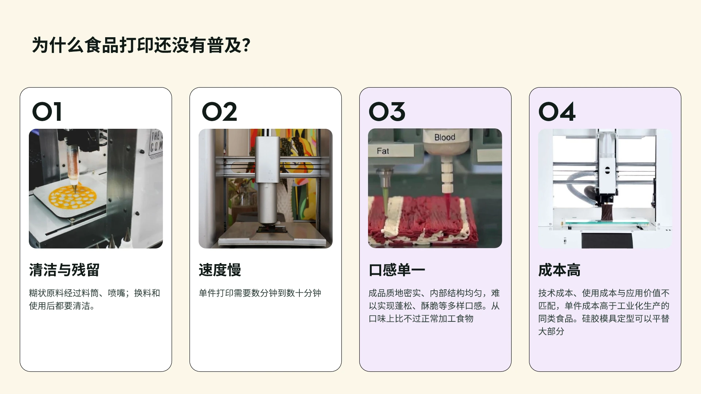
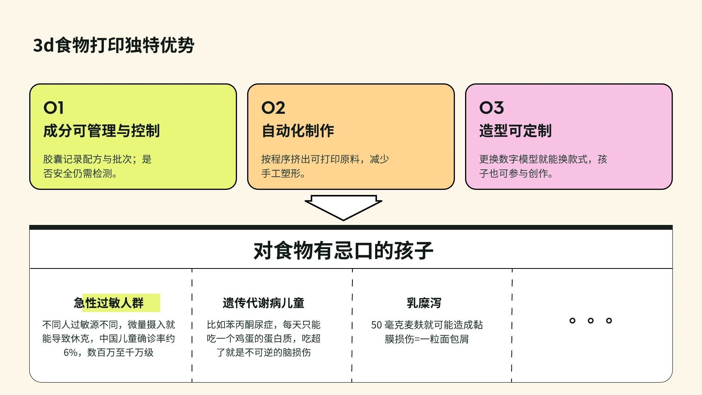
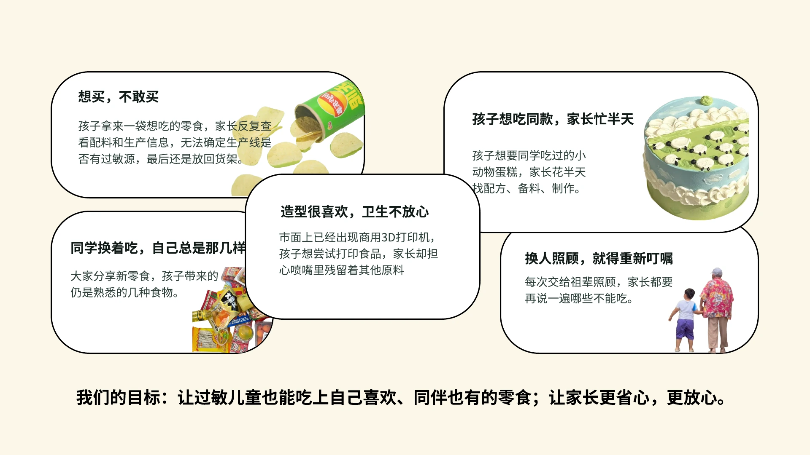
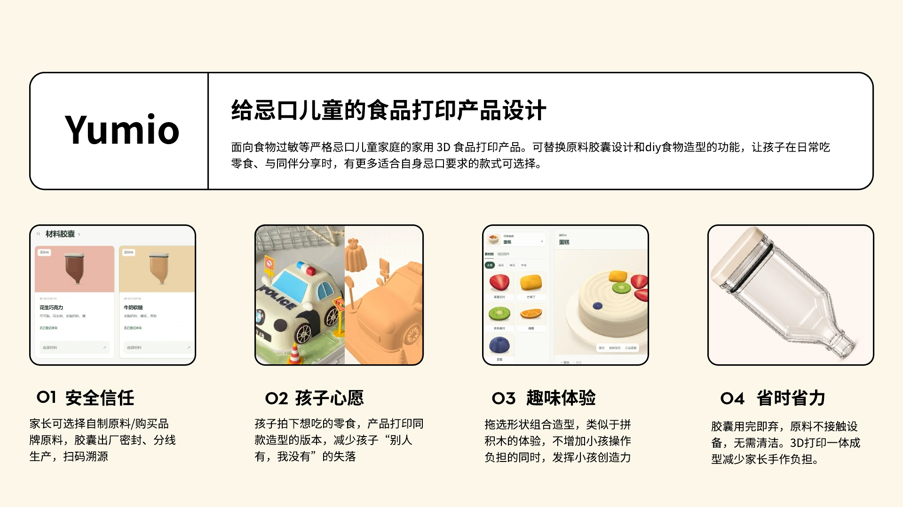

<div role="region" class="homeDeck" id="homeDeck" aria-labelledby="deckTitle">
  <div class="deckHeading">
    <h2 id="deckTitle" tabindex="-1">食品打印产品介绍</h2>
    <a class="deckOriginal" href="assets/home/product-introduction.pdf" target="_blank" rel="noopener">打开原始 PDF ↗</a>
  </div>
  <div class="deckPages">
    
    
    
    
    
  </div>
  <div class="deckEnd"><a class="primary" data-enter-studio href="#studio">进入创作工坊 →</a></div>
</div>
